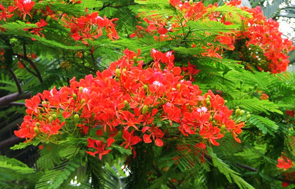

하문시의 나무인 봉화나무는 경과의 낙엽대교목에 속하는 것으로 높이는 20미터에 달하며 나무정상에 피는 꽃은 녹색으로 화관은 선명한 적색이고 꽃잎은 노란색 줄무늬로 협과는 목질로 50cm에 달한다. 봉황나무는 해빛을 좋아하고 추움을 견디지 못하며 생장이 신속하고 뿌리가 발달한 것으로 쉽게 파종과 이전재배를 할 수 있다. 여름철에 꽃이 피고 꽃이 크며 색이 짙은 것으로 온 나무가 적색으로 푸른 나무잎과 어울려 더욱 아름답게 보인다.